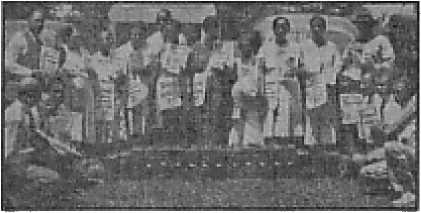
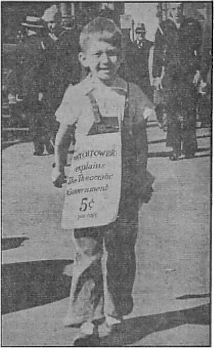
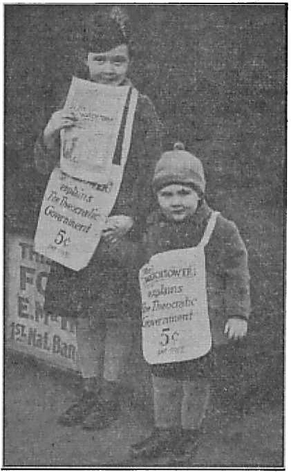
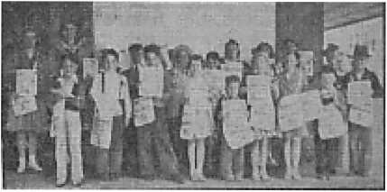

JOURNAL OF FACT, HOPE AND COURAGE
American People Shocked
Path to National Hara-kiri
Who will have a resurrection?
Five Cents a Copy One Dollar a Year
$1.25 In Canada and Foreign Countries
Published Every Other Wednesday
Contents
Japan Ruined by the Devil (Part 4)
The New Government
"Thy Word Is Truth”
Australasia — “Leave Teachers Alone”
Under the Totalitarian Flag
Gems from Churchill’s Speeches
Chief of Police Sued for $3,314
Aviation — Studying Weather for Air Travel 28
British Comment
Published every other Wednesday by WATCHTOWER BIBLE AND TRACT SOCIETY, INC.
117 Adams St., Brooklyn, N. Y., U. S. A.
Editor Clayton J. Woodworth
Business Manager Nathan H. Knorr
Five Cents a Copy
$1 a year in the United States $1.25 to Canada and all other countries
NOTICE TO SUBSCRIBERS
Remittances: For your own safety, remit by postal or express money order. When coin or currency is lost in the ordinary mails, there is no redress. Remittances from countries other than those named below may be made to the Brooklyn office, but only by International postal money order.
Receipt of a new or renewal subscription will be acknowledged only when requested. Notice of Expiration is sent with the journal one month before subscription expires. Please renew promptly to avoid loss of copies. Send change of address direct to us rather than to the post office. Your request should reach us at least two weeks before the date of issue with which it is to take effect. Send your old as well as the new address. Copies will not be forwarded by the post office to your new address unless extra postage is provided by you.
Published also in Afrikaans, Bohemian, Danish, Dutch, Finnish, French, German, Greek, Hungarian, Japanese, Norwegian, Polish, Portuguese, Spanish, Swedish, Ukrainian; also special Australian edition in English.
OFFICES FOR OTHER COUNTRIES
England 34 Craven Terrace, London, W. 2
Canada 40 Irwin Avenue, Toronto 5, Ontario
Australia 7 Beresford Road, Strathfield, N.S.W. South Africa 623 Boston House, Cape Town
Entered as second-class matter at Brooklyn, N. Y., under the Act of March 3, 1879.
Betrayed by Its Friends
♦ Roman Catholicism is an officially recognized religion in heathen Japan. This is a significant point, for numerically Catholics are weak in the country. But Rome has played a clever game and gained an advantage in Japan accorded to no Protestant church organization.
The policy Rome has pursued in Japan is that of playing into the hands of the totalitarian crowd, encouraging patriotic ceremonials, which are part of the Shinto religion, and involve practical worship of the god-emperor. Rome also endorses “honor for ancestors and admiration for national heroes”. Actually this “honor” and “admiration” involve a form of worship of these dead ancestors. Archbishop Paul Marella, apostolic delegate to Japan, “advocates a wide adaptation to the character, manners and national customs of the Japanese people.” The Roman Hierarchy in Japan has 319 churches and chapels, 115 Japanese priests, 127 Japanese monks and 672 Japanese nuns, 293 foreign missioners, 104 foreign monks, 489 foreign nuns. The Jesuits conduct a university in Tokyo. Out of a population of some 70,000,000 there are only about 120,000 Roman Catholics. Children to the number of 829 are cared for by nuns in 27 shelters. A picture of one such shelter shows some 120 little ones posing for the picture with their caretakers. There is not a single smiling or happy countenance among them. The children look sad, and the nuns “hard”. It is pathetic.
The Toronto Globe and Mail for December 9, 1941, carried an article to the effect that Japan was being used as the cat’s-paw of the Berlin-Rome Axis, and said, in part:
Japan’s entry into the war may be dictated by her own political and economic interests, but the time and the manner of her attack were dictated by Axis strategy.
“And in His name shall the nations hope.”—Matthew 12:21, A.R.V.
Volume XXIII Brooklyn, N. Y., Wednesday, April 1, 1942 Number 588
Japan Ruined by the Devil (/„ Four Parts-Pan 4)
TREACHERY is the essence of totalitarianism. It knows no loyalty, save to itself; it has no code of honor, except in its own interest. "The man that swears to his own hurt, and changes not’ is the complete opposite of all that totalitarianism stands for. The treachery of Japan in its attack upon a nation that was at peace with her is in keeping with the entire course of the totalitarian Axis. For years the ostensibly friendly Japanese nation had been dealing with the United States as with an enemy, while the United States had with almost naive trustfulness dealt with Japan amicably.
Japanese formed the largest racial group in the Hawaiis. They were honored and entrusted with important positions in the police department, as road supervisors, inspectors and government officials. Others were allowed to hold positions in connection with the telephone service. All of these positions offered ideal opportunities for spies, and were so used. In addition there was an espionage network directed by the Japanese consul general in Honolulu, which made use of the hoodlum element from the families of Japanese farmers on the island. The Japanese army intelligence directed a multitude of spies, who occupied positions as storekeepers, restaurateurs and cafe-owners. Japanese naval intelligence also was active, using fishermen and seamen, hotelkeepers and employees, servants in private families and the dealers in fresh produce who supplied fruits and vegetables to the shi$s in Pearl Harbor and to the army posts and used their eyes and brains to get information, which was conveyed to the spies in the Consulate. The same was true in California. Hawaii had a fifth column which numbered 100,000 potential members. There was no way of telling whether Japanese-American citizens were loyal or not. Thousands undoubtedly were.
While Japan disregarded her treaties generally, there was one treaty she decided to observe, and that was and is her agreement with the Axis, which is actually the basis of her entire policy, with which it is integrated. Japan gave the United States to understand that nothing would be allowed to interfere with her co-operation with the rest of the totalitarian gang.
A Pacific-wide system of undercover communications by means of shortwave radio sets was detected to have been the basis of the Japanese spying operations. Sets large enough to send messages to “fishing” boats offshore conveyed information which was then relayed to battleships, which carried it to Japan. These small sets were found in cellars and other hidden places. The thoroughness of the Japanese fifth-column operations indicates a long period of preparation.
This preparation included the attack upon Chinese cities by means of machine and rapid-fire guns, furnished to the Japanese General Staff by Schneider-Creusot, so that they might try them out in China and convince themselves of their deadliness. The result was heavy orders which required Schneider-Creusot, International Murderers, to add 55,000 laborers to their pay rolls.
It is of interest here to recall that the Japanese Army was organized by a French mission under Marguerie in 1872, and conscription adopted instead of limiting military service to the Samurai class.
In 1931 Japan invaded Manchuria. As her attack on China cost her plenty, it was thought in “authoritative” circles that Japan could not stand the financial strain of a prolonged war; but she has been at it now for ten years, off and on, and seems not yet down and out.
The United States took the initiative in applying pressure to make Japan live up to the Nine-Power Treaty and other peace pacts, with the result that Japan came to regard America as her enemy, feeling that the United States was blocking her road to a continental empire.
It began to be observed by those who had their eyes open. Upton Close remarked that when President Roosevelt authorized resumption of building naval vessels, the Japanese gave up hope of bluffing the United States to withdraw from the Pacific, and got busy preparing to put that country out.
Eugene Chen, three times China’s foreign minister, said that Japan’s next war would be for the mastery of the Pacific, and that she was even then preparing systematically for war with the United States. This was in early 1932. In January, 1934, Lieut. Gen. Gerth van Wyk, a former commander-in-chief of the Dutch Indian forces, declared that in case of a war between Japan and the United States the odds were that Japan would be the victor; but that the co-operation of the British, French and Dutch would check the Japanese.
In the same year Brig. Gen. William Mitchell, retired, told the Aviation Commission that Japan was America’s most dangerous enemy. He advised the building of an air force capable of attacking Japan. This idea was not as “mad” as it was then considered to be by certain editors. Mitchell has now been belatedly honored.
Japan Fears Air Attack
Japan then and now most of all fears air raids. One night a chimney was blown down in one of its large cities, and in a few hours 200,000 inhabitants were homeless. Planes would work havoc in Japan’s crowded cities, with their flimsy buildings. Even her munitions and defense industries are housed in wooden structures. Greater Tokyo has 7,094,600 inhabitants; Osaka, 3,394,200; Nagoya, 1,249,100; Kyoto, 1,177,200;. Kobe, slightly less. Fire is the calamity most dreaded by the Japanese. Their houses are of wood, with sliding panels and windows of paper. They are raised a few feet off the ground, and fires once started have plenty of draft. In spring the houses are dry and the winds frequent. The prospect of an air raid is an appalling thought to Japanese.
Mention of an air force capable of attacking Japan was therefore not at all pleasant to the Japanese. They didn’t like the United States anyway. At the time of the settlement of the Russo-Japanese war President Theodore Roosevelt called the peace conference at Portsmouth. Japan acquired Korea, but lost southern Manchuria, which she most wanted.
After the World War, Woodrow Wilson opposed Japan’s retention of Shantung, and she had to give it up. President Harding, summoning the Washington Naval Conference, is held responsible for its fixing the naval strength of Japan at three-fifths of that of the United States and of Great Britain.
President Coolidge, Japan thinks, was responsible for the Exclusion Act of 1924, which has caused much misunderstanding.
The Exclusion Act, however, was not directed merely at Japan, but covered all alien immigrants not eligible to American citizenship. Nor was the bill passed because of undue prejudice against Japan or because of anything said by Japan to the effect that the passage of such a bill would have serious consequences. Its adoption deeply offended Japan.
Japan, however, had been taking unfair advantage of a previous “gentlemen’s agreement” which provided for entry of all Japanese having visas, the understanding being that such visas would not be given to mere laborers. Yet Japan sent in thousands of such laborers, and then provided “picture brides” for these laborers. As a result the annual Japanese births in California increased from 455 in 1908 to over 5,000 by 1924.
Japanese workers have long hours and no weekly rest day. They are accustomed to getting off two days a month. In April, 1937, Arthur Shaw, workers’ delegate from Great Britain to the World Textile Conference, stated, “Sweating the workers of a country is not the way to make any country great and prosperous.” Japan had a work week of fifty-seven hours, a quota which was nine hours longer than the forty-eight hours fixed by the International Labor Conference in 1919.
The competition of Japanese on the West Coast was increasingly resented by Americans, and the more so when Japan attacked China. Employers, both domestic and commercial, would often ask prospective Japanese servants and workers their attitude toward the Far East conflict, and sometimes receive the frank reply, “I am a Japanese, and naturally my sympathy is with Japan.”
The Sinking of the Panay
An incident in Japan’s war on China was the sinking of the U. S. S. Panay, claimed to have been an error, but almost certainly a deliberate act. Japan received a bill from the United States totaling $2,214,007.36, and paid, and also apologized, but the officers responsible for the outrage were not disciplined, and indication is that they were not particularly blamed. It was a sample of Japanese contempt for America.
While the United States Maritime
Commission decided against selling its old Shipping Board vessels to Japan, yet American scrap iron continued to go there from other sources in ever-increasing quantity. Japan indicated an insatiable appetite for this scrap to feed her munition forges. The scrap was considered so important that it was sent in ships making 18-20 knots an hour; a very expensive way to transport junk. Agents for Japan were on hand at every ship sale and at every junk auction of any size. The American government wanted to keep out of any kind of support of the Sino-Japanese War, but private concerns were not particular.
To wage war on China Japan needed 35,000,000 barrels of petroleum; and as she produced only about 5,500,000 barrels herself, she had to import the rest. That explains why certain British and American oil companies continued to send huge quantities of oil to Japan annually, much of which was stored. Japan was getting ready.
While all along intending to attack the United States, Japanese spokesmen continued to profess friendship. Preference for the totalitarian setup and sympathy with the Axis powers, however, was becoming more manifest. A noted ' Japanese spokesman, Toshio Shiratori, in 1938, said, “I welcome the term fascism as I do the term totalitarianism. There has been enough Anglo-Saxon influence in this country. It is time we allied ourselves with Italy and Germany to prevent encroachments by the popular front. The ‘glass house’ democracy of the United States and the communism of Soviet Russia go hand in hand.”
It became evident that Japan was determined to disregard all limitations as far as the number, tonnage and guncaliber of warships was concerned. But the visit of three United States cruisers for the opening of the Singapore naval base early in 1938 was resented by the Japanese press and taken as indicating that Britain and America had reached an understanding in the Pacific Ocean. Japan has renamed Singapore Shanpor.
Japan’s naval, minister described the Japanese program as one of watchful waiting, but warned that they would not waste time indefinitely with that attitude. He obviously spoke the truth.
American People Shocked
Ambassador Joseph C. Grew, addressing Japanese notables at a luncheon of the America-Japan Society in Tokyo, October 20, 1939, said:
American people have been profoundly shocked over the widespread use of bombing in China, not only on the grounds of humanity but also on the grounds of direct menace to American lives and property, accompanied by the loss of American life and the crippling of American citizens.
The American people, from all thoroughly reliable evidence coming to them, have good reason to believe an effort is being made to establish control, in Japan’s own interests, in large areas of the continent of Asia and impose on them a system of closed economy.
The Japanese, however, continued to profess friendship, and at the New York World’s Fair presented its Pavilion to the City of New York as an emblem “of that 87-year-old friendship between the United States and Japan, that all will hope may long be preserved”.
It was a foregone conclusion, however, that the United States could not indefinitely maintain friendly relationship with a nation that was increasingly sympathetic toward the totalitarianism of Hitler and Mussolini and also increasingly menacing toward the freedom of the seas. But Japan wanted American friendship on its own terms, and not on the democratic and fair basis of the terms laid down by America. In this connection Raymond Clapper, in the New York World-Telegram of November 19, 1941, said, in part:
Without going into detail, it is safe to say that the main thing the United States asks is that there be an end to the Hitler type of conduct in the Orient. With a change to more peaceful methods, and adoption of a policy of equal rights for all nations in the Far East, it would not be difficult for the United States and Japan to reach an agreement. The measures we have adopted, the economic blockade and the military preparations, are strong and were meant to be so. But this government does not want war in the Pacific, and it would be glad to conclude an understanding which assured equality of opportunity to all nations in the Far East. ... The United States will not acquiesce in Hitlerism in the Pacific.
From this it will be seen that while America’s attitude toward Japan was still conciliatory, it was without that confidence that is essential to a true friendship. October .15 all outstanding balances of licenses which had been-granted for the exportation of No. 1 heavy melting steel scrap were revoked, and the following day the exportation of all grades of iron and steel scrap were placed under the licensing system. Under the new regulations licenses were issued to permit shipments to countries of the Western Hemisphere and Britain only. Until then the bulk of scrap iron and steel exported had gone to Japan.
The halting of war exports to Japan, the extending of lend-lease aid to China and Russia and the freezing of Japanese credits by the United States exerted an increased pressure on Japan with a view to bringing her military statesmen to their senses. But the moves were unavailing. Japan’s military caste was hellbent for mischief.
The Japanese press put on a campaign to bring the United States to terms, Japan dictating the terms, which were set forth in the Japan Times Advertiser as follows:
1. All military and economic aid to Chungking must cease!
2. China must be left “free to deal with Japan,” and Chungking advised to make peace with Japan.
3. Military and economic encirclement of Japan must end.
4. Japan’s “co-prosperity sphere” must be acknowledged, and Manchukuo, China, IndoChina, Thailand, the Netherlands Indies and other States and protectorates must be allowed to establish their own political and economic relations with Japan without interference of any kind.
5. Manchukuo must be recognized; “nobody will undo what has been done there.”
6. The freezing of Japanese and Chinese assets must be ended unconditionally.
7. Trade treaties must be restored and all restrictions on shipping and commerce ended.
Now the Tokyo diet voted a large war outlay, approving a military budget of 3,800,000,000 yen, approximately $1,000,-000,000. Japan had been spending nearly a third of its national income on military provisions, a sum that was exceptionally high for a country as poor as Japan. The added outlay was well-nigh overwhelming. But the saying that a government will not be kept back from war because of financial problems was again confirmed. Japan had begun something that she would find hard to finish, and 'that pride which goes before destruction prevented her from turning back.
United States’ Terms
The United States had terms of its own to present. These terms may be summed up as follows: Self-restraint, abstinence from force and from interference with internal affairs of other nations. Settlement of problems by negotiation. Observance of treaties while recognizing occasions for modification by peaceful methods. Promotion of economic security and stability the world over, and the lowering or removing of excessive barriers in international trade. Effective equality of commercial opportunity and equality of treatment. The limitation and reduction of armaments.
These terms or conditions were not acceptable to Japan. It was putting her on an equality with other nations, instead of catering to -her unbounded ambition to be the cock of the walk, an ambition that linked the Japanese government with the totalitarian setup. Its “Great Japan-East Asia Construction League”, under the presidency .of Prince Fumi-maro Konoye, had vowed to end the “encroachments” of white and particularly Anglo-American interests on the lands and livelihood of the East Asiatic countries.
Refusing to accede to the terms that would have preserved peace in the Pacific, Japan asserted its close alliance to the totalitarian Axis. The effect ot Japan’s course was to draw the ABCD powers together, composed of American, British, Chinese and Dutch, an association which Japan might have joined on equal terms, had she not been deceived by the Devil and led down the road to self-aggrandizement and ultimate self-destruction. Japan now began to complain of “military encirclement”.
Surrounded flow by powers that did not relish Japanese domination as the price of peace, Japan was approaching more and more closely to the brink of war. Many there were in Japan who did not want war. Lieut. Gen. Kisaburo Ando, executive vice-president of the Imperial Rule Assistance Association, told a conference of leading citizens and businessmen that “Japan must prepare herself to meet the situation in such a manner as to gain victory without waging war and thus win a victory over war”. Apparently the Imperial Rule did not want this assistance or suggestion. The war lords of Japan, in actual control, had built up a tremendous military machine, and would have to do something with it.
It has been said that Japan has never lost a war. On the other hand, it is pointed out that Japan has never won a major war without the aid of Britain or'America. In the Russo-Japanese war they had the support of American bankers, assuring an uninterrupted flow of supplies. In the World War Japan had the British fleet on her side in the Pacific.’ American Big Business has, until recently, been supplying Japan with the munitions and weapons used in invading China. So says the United States News of October 24,1941.
Yet the idea that America could win an overnight victory in a war with Japan was deplored by well-informed thoughtful Americans even before Japan had demonstrated her striking power.
Sunday, December 7, the New York Times carried the following:
Japan indicated early today that she was on the verge of abandoning efforts to achieve a settlement of Pacific issues by diplomatic negotiations at Washington. At the same time warnings circulated that Soviet Russia—with an estimated Far Eastern army of 840,000— had joined the United States, Britain, China, the Netherlands Indies and the British Dominions in a united front against Japan.
These reports, ^carried in the Japanese government-controlled press, served to stir up war sentiment to fever heat, and may have been intended to do so. Obviously they were untrue. Russia has not yet joined the ABCD powers against Japan.
Toward the end of November hopes for peace in the Pacific went down to zero. The Navy ordered permanent black-outs at the Cavite naval base and at Olongapo. Early in the month 500 Japanese residents left the Philippines for Japan, unable to continue business, due to the freezing of Japanese credits. The Japanese newspaper Nichi Nichi said that if Japan “starts marching as one great army she will have no trouble in smashing to smithereens” the so-called British-American-Russian-Netherland “encirclement” of Japan. It said, with the usual wiliness of the totalitarian abomination, that America was assuming control in Chungking and bringing pressure on Hongkong, Singapore and the Netherlands Indies with the pretext of defensive measures against Japan, but really to undermine British influence in the Far East.
Meanwhile Japan got busy encircling the Philippines, with forces in Japan itself to the north, the Japanese mandated islands to the east, and the IndoChina forces on the west. By these moves Japan showed its determination to close not only China, but all of the Orient, to the outside world, and to drive the Western powers completely out of that part of the world, depriving them of essential raw materials.
Japan knew that it would be quite impossible for America to defend all of the 7,000 islands in the Philippine group. She also knew that the Japanese could not get anywhere without taking the main island of Luzon. In the effort to do this Japan was willing to sacrifice any number of her soldiers. Her devilgovernment did not and does not concern itself with the cost in human lives if it reaches its objective of seating itself on top of everything. So it could afford to be reckless, even as it had taught its virtual slave population to be reckless in carrying out its demands, because, forsooth, were they not descendants of “gods”? And could not the divine (1) emperor make them “gods” if they did die in battle? It is the old, old lure, “Ye shall be as gods!” It is the old trick of exalting some to lordship over their fellow men, to a fictitious divinity, the totalitarian ruse to counteract the democratic fact that “all men are equal”.
Japanese Blitz Forecast Long Ago
The Japanese blitz came as forecast seven years ago. The tactics and strategy back of the attack by plane and ship upon the American and British Pacific possessions, together with the followup attacks assisted by Japanese soldiers, were forecast in literally hundreds of American newspapers seven years ago. They follow almost exactly a series of predictions made in 1934 by Vice-Admiral Nobumasa Suetsugu in an interview.
It appeared that the Tokyo war lords acted in complete co-operation with Japanese residents in Oahu island of the Hawaiis. Hawaii had an overwhelming non-American population. Out of 423,-330 persons there were 157,905 Japanese, of which 120,552 were “American-born”. There were 103,791 Caucasian, 64,310 Hawaiian and part-Hawaiian, 52,569 Filipinos, and 28,774 Chinese. Because of the religious loyalty of most Japanese and Am erican-Japanese to the emperor, Army and Navy men felt that in the event of trouble the entire Japanese population would have to be rounded up; for even if they could be sure, of nine out of ten, yet they would never know who the really loyal American-Japanese were likely to be.
Like the German and Italian and other totalitarian governments, Japan is not squeamish about sacrificing its man power. Suicidal efforts are rewarded with plenty of “glory”. These totalitarian gangs are good at handing out “glory”, but that’s about all the people get. Japan won with suicide heroics against Russia in 1904. They captured seemingly impregnable trenches by the simple expedient of filling them with their own dead. In the World War Japanese soldiers saved the day at Tsingtao by getting to the top of the city’s wall over piles of its own dead. Deceived by the Devil, Japanese are ready to do anything for their god-emperor. To die for him means special glory. An American military observer remarked on one occasion that in the event of war America would give the Japanese plenty of opportunity to die for their emperor.
Japan’s army is larger than America’s, numbers only considered, but at the way they are wasting their soldiers, that advantage will be of short duration.
Invasion of the United States is believed to be Tokyo’s goal. Gen. Homer Lea, 32 years ago, outlined six areas of combat in a Japanese-American war: the Philippines, Hawaii, Alaska, Washington, Oregon, and California, omitting Japan itself.
National Hara-kiri?
The decision to make war on the United States was made by Nippon’s powerful secret society, “the Black Dragon.” Japan had to choose between giving up aggression and facing a conflict with the United States. It was a choice between national humiliation and suicide. But in Japanese eyes such suicide would come with honor, it would be a sort of national hara-kiri. That is their patriotism and their religion, the two being inseparable.
At Honolulu a Japanese sailor, trapped in one of the midget submarines destroyed during the December 7 attack on Pearl Harbor, was buried in a section of his little craft. It was found impossible to remove the body. There is a suggestion here of Japan’s plight. Trapped in its self-centered pride, it will die in its attempt to carry out its Own Devil-inspired scheme.
Tokyo’s declaration in 1938 of “Asia for the Asiatics [meaning for Japan]” bolstered the Axis. Its attack upon America and Britain in the Pacific was doubtless influenced by Japan’s regard for its Axis connections. The treaty with the Axis is the only one that Japan has observed.
It was remarked as a suspicious circumstance that Hitler in his November Munich speech made no mention of Japan, now obviously a more important factor in the Axis line-up than Mussolini. It may very well be that Hitler already knew what was brewing in the Far East and sought to divert attention from what Japan was about to do by omitting reference to Japan altogether.
It must not be supposed that there is any love lost between the Axis partners. In 1936 Hitler was freely caricatured in Japanese papers, and the German embassy in Tokyo on several occasions made representations to the Foreign Office in objection thereto. The Foreign Office merely replied that they in turn objected to Hitler’s reference to the Japanese as an inferior race.
Hitler has not stressed the Nordic superiority quite so strongly of late, and has been said to refer to the Japanese now as “yellow Nordics”. Formerly he referred to them as “yellow vermin” and as “undermen”—creatures less than men. In the German edition of Mein Kampf, at page 319, he says:
Suppose Europe and America would perish and any further Aryan influence on Japan would cease: Japan’s development in science and technique would continue only. for a very short time. It would take no more than a few years for the well to dry up.....Just
as the contemporary Japanese achievements owe their existence to Aryan sources, it was foreign influence and foreign spirit that created Japanese culture in the days of old.
Subversive Priest
Both the Nazis and the Japanese want to rule the world, and so does Rome. Rome’s evident sympathy for the totalitarian setup is evidently due to' the fact that it fits in best with its own views and aims. In this connection a letter appearing in the Chicago Daily News of January 5,1942, is of significance:
A reading of the December 22 issue of Coughlin’s Social Justice prompts one question: What strange immunity is enjoyed by this Fascist who today is the most outspoken apologist for the Berlin-Rome-Tokyo Axis in the United States?
Disunity, treachery to the nation, defeatism and incitement to panic is Charles E. Coughlin’s contribution to America in the greatest crisis in the country’s history.
[He says:] It was the “mumbling, jumbling politicians whose failures got us into this war, and by the God of Peace we will not be silent while we and our sons bear the brunt”. Also, to quote again, “History will decide whether the Japanese, attack on Pearl Harbor was dastardly or clever.”
Another editorial comment: “Assuming the United States is victorious, such a victory will bring only grief and disaster—” and also, “when hostilities cease, those of us who are able will be they who will bring to account the warmongers of the world—warmongers whose machinations were responsible for the misery of today.”
There is not one word in Social Justice that would not have been dictated in the offices of the Nazi propaganda ministry in Berlin. Only some special immunity for Charles Coughlin, its proprietor, can account for its continued existence as an instrument of betrayal to this nation and its allies now in a death struggle with fascism.—Norman Freilich, Winnetka.
While this priest as an individual is not worthy of mention, the fact that he is a servant of the Hierarchy in good standing must not be ignored. He speaks as an individual, yet the fact that a Roman Catholic priest in good standing, and with' the knowledge that such men are supposed to have, can make such statements as are accurately diagnosed in this letter is amazing.
Witnesses in Japan
The charge of subversion which the Roman Catholic Hierarchy is now attempting to fasten upon Jehovah’s witnesses comes back to that organization as a boomerang, and is demonstrated in utterances like the foregoing. Jehovah’s witnesses pray, “Thy kingdom come,” in harmony with the Lord’s direction. They look for the full establishment of that Theocracy in God’s due time. They recognize that in democratic countries they have had greater liberty in the proclamation of the Kingdom message. Democracy, sincerely carried out, is the best safeguard against the encroachments of dictators and demagogues as well as a protection against ecclesiastical oppression. Jehovah’s witnesses in America have no cause to be disloyal. Their headquarters are in America, not in Rome. Their fellow witnesses in Italy, Germany and Japan have suffered the portion of martyrs. They have been persecuted, arrested, imprisoned. They have suffered in concentration camps for years, and still maintain their right to worship God “in spirit and in truth”.
Japan has had the witness, too. As early as 1921 it was reported that some in Japan were showing an interest in the message of the Kingdom, and a booklet describing the blessings of the coming millennium was in course of preparation. A representative of the Watch Tower Bible &■ Tract Society sent to Japan in 1926 reported,
The Japanese people are very hungry for the good news. They are struggling to get their daily bread, and many commit suicide because it is so hard to live. My privileges are great to carry them the message of comfort, and I am glad to remember that the battle is not ours, but the Lord’s.
Many Welcome Kingdom Message
The work progressed rapidly and thousands upon thousands of books and booklets in Japanese were distributed in a decade of zealous activity by Japanese witnesses. In the 1935 Yearbook of Jehovah’s witnesses it is stated:
Japan : The books and other literature have been seized and confiscated, many of the brethren arrested and thrown into prison, and now only The Golden Age can be published and distributed. . . . Notwithstanding the opposition, this part of publishing the Kingdom message has gone forward during the year, and the circulation of that magazine totaled during the year to the number of 1,143,000. Each issue of the magazine carries the message of the Kingdom. . . . There are now 31,000 subscribers regularly on the list receiving the magazine, besides the numbers being placed in the hands of the people by the faithful remnant who go from place to place to publish the same. Before the publication of the- Golden Age magazine the name of Jehovah never was heard of in Japan, but now the people are quite familiar with the name Jehovah and his witnesses.
The Year of Hitler
The following year the Japanese representative of the Watch Tower reported:
Since we were forced to stop the publication of The Watchtower in 1933 [note the year] by the oppression, the Lord provided a way to supply the spiritual food for his own people by the circulating-letter system. Both anointed and Jonadabs are well strengthened and rejoiced with wonderful light which shines forth through God’s organization. Also they are well supplied with fresh news of the activity of Jehovah’s organization on the whole earth by the same system.
The Yearbook also mentions the extent of the work in Korea, directed from Japan’s headquarters of Jehovah’s witnesses :
During the year 1,068,811 copies of the Golden Age magazine in the Korean language were placed in the hands of the people. There 108 engaged in the work. A number of public meetings were held, in which considerable interest was shown by the people. At least, the Korean people are having the opportunity to hear that Jehovah is God and that his kingdom is the only hope of the world.
Then, in 1940, came this letter (which appears in full in Consolation No. 570):
The outbreak of the Japan-China war on July 7, 1937, gave [the Roman Catholic Hierarchy] a golden opportunity. Taking the tide as it offered, the Catholic-totalitarian gangsters succeeded cleverly in grasping the control of Japan. It is now quite manifest that Japan is entirely in the hand of the Hierarchy. ... all of our brethren who had been engaging in their witness work were arrested simultaneously throughout the land, and after a year or so a few were acquitted conditionally, while the. majority are yet in prison. . . . The enemies of the Kingdom, dominated by demons, not having been able to find in them any guilt that they sought, recently enacted a vicious law by which they are not only able to “lawfully” punish our brethren severely, but even able to never discharge them as long as they remain faithful to Jehovah and His King.
In the other Axis lands a similar course is followed with regard to Jehovah’s witnesses. Japan is running true to form. Its end will be according to its works.
Happened in Chicago
♦ I have a baby girl, sew, wash, iron, keep house, and get in 150 hours a month as a pioneer. At a tavern I stated that religion, commerce and politics are doomed to destruction, but I have a message which shows Jehovah has provided a place of protection. The bartender was not interested, but two officers (Irish) seized me by both arms, saying, “What did you say? What’s this? Why, we need religion! Girlie, you are doing a terrible wrong.”
I pointed out that we need Christianity, but not religion; that the Roman Catholic Hierarchy is a wicked menace heading religions and totalitarian rule plainly foretold in the Catholic Bible; that a course of instruction on the Bible is offered free by Jehovah’s witnesses to all who love righteousness; that no one is required to join anything and that all questions will be answered; that if you pursue these Bible studies you can easily see who are your enemies and what you should do if you want protection.
One of the officers tapped his gun and said, “This is my' protection.” He was asked what he would do when the bombs begin to fall. He was told that the papers, magazines and radios carry censored news and are full of propaganda, but the Bible contains the truth. The officer stated, “I can arrest you for doing this work,” but was reminded that he could not do it legally, that the work is not peddling, but is the distribution of Christian literature, preaching the gospel; and that it would be too bad to arrest one of Jehovah’s witnesses and thus take his stand against Jehovah God.
The officer invited me to be seated while he questioned me at length. Did I believe in self-defense? I did. Where did I get all my information? From the books. He admitted that he had studied to be a Catholic priest; he obtained Salvation and Refugees. Then he picked up the phonograph and played it for all the men. He questioned me as to sin, baptism, venial sin, the killing of a thief, what is hell ? where is heaven ? Each question was answered briefly, with constant attention being drawn to the free Model Study classes.
The second officer wanted to learn how I could express myself so well; how I could remember what to say; how much schooling I had had; how many people there were who could talk like that; and then contributed 50c for one book and refused to take any change.—Anna Longa.
Do Not Fear Gangsters
♦ Do not fear gangsters, religious or otherwise. They are more afraid of the truth than you are of them. The Devil goes about as a roaring lion, bluffing. “The Lion of the tribe of Juda” does not need to bluff; He can deliver the goods. So much anent persons who threw six beer bottles at a trailer occupied by Jehovah’s witnesses at Meppen, Calhoun county, Illinois, and the same night left a bed of live coals in front of the trailer, and on its door was tacked this notice: “Witnesses of Jehovah, beware! Leave Calhoun county or suffer the fate of the flaming torch. Legion of flaming torches.” Cowards never sign their names. They sometimes admit the identity of their “church”. And it is always the same.
Fighting Almighty God
♦ After fighting Almighty God, resisting His truth and opposing His people, it is reported that Sheriff Blair, at Sparta, Randolph county, Illinois, ran his car into a tree and killed himself. Many such items are now reported. There will be more.
The Spanish company of Jehovah’s witnesses in Los Angeles, California, increased to fourfold in a single year.
Boldly
♦ “And he went into the synagogue, and spake boldly . . .’’(Acts 19:8) What a descriptive adverb Luke used! It is one of the characteristics of all prophetic preaching. . . . Demetrius, the silversmith, reverted to an old trick to save his lucrative business. He organized against Paul in the name of Diana. That would capture the public imagination, and it did. Men employ that same trick today to secure their profits. . . . Just recently some sixty Jehovah witnesses were jailed in Joliet, Illinois, for disturbing the peace. The good people were shocked; imagine it, religious people disturbing the peace. But just a moment ! Read the lesson again. Paul created a stir at Ephesus when he proclaimed boldly the gospel message. Indeed where-ever Paul went he created a stir. What has happened to our Christianity that our preaching creates such a little stir among the people"? Have we compromised our gospel so that it has lost its power to create a disturbance? One of the charges against Jesus was that He stirred up the people. Perhaps if we proclaimed His gospel boldly we too would disturb the peace. Racketeering. —This is a new word for an old practice. Demetrius was a religious racketeer. He was interested in religion because he made money off of it. We have such people with us today.—John F. Schaefer, in The Evangelical Adult Quarterly.
Taking Care of a Politician
♦ Out of work for a long time, the husband of one of Jehovah’s witnesses in Illinois at length obtained a political job, and was hardly in it before representatives from his home town came to his superior and demanded his removal on account of his wife’s activities for The Theocracy. Previously he had been very active politically, but, not being willing to bring unfair pressure upon his wife’s conscience, and expecting to be discharged anyway, after this he let politics slide and merely attended the best he could to the duties of his office. At the subsequent political election his party was defeated, and because he had been inactive politically, and had looked after his work, he was retained in his job.
Belleville Awakening from the Dead
♦ The lady that takes care of the K. of P. Hall, where we held our last zone assembly, told me she received quite a few telephone calls, Saturday and Sunday, asking her how she was “making out with them there Jehovah’s witnesses”, and what kind of people they were. She said she told them that Jehovah’s witnesses are the nicest people that had been here for a long time. On one of the uptown streets one of the publishers heard a man say, “These witnesses are as thick as bees on the streets.”—Louis F. Wilson, Illinois.
Experiences in Illinois
♦ While workihg with the magazines a publisher accosted a former deputy sheriff who had served as such during the time of persecution during the World War. He was one who had confiscated the literature in this vicinity at that time. He brought up the flag saluting and made this statement: “You had better salute the flag. Get right with the government with this war coming on. You can get right with God later.” [That’s what Jie thinks.—Ed.]
In. one city in this zone the sexton of a cemetery is quite interested in the truth. He has quite a few opportunities to witness. One day a lady came out with a Methodist preacher. Something was said about the dead, and the sexton told her where the dead are, much to the discomfort of the preacher. The preacher opposed, but the lady returned later for more information. This cemetery is divided by a railroad which passes through one end of it. One day a man who is on the road stopped for a minute and the sexton began to give him the witness.. The man says, “I have a book like that,” and pulled out the booklet Universal War Near. The sexton offered him a booklet, a4id he said, “Wait until I read this one and I will trade with you.” He sat under a tree while he read it through,' and then he took the Protection booklet. A year or more had passed and the sexton had forgotten the incident. One day he saw a man walking down the track, and this man waved and hollered, “That war isn’t far off.” It was the same man.—E. H. Comstock.
Theocracy publishers, Natchez, Miss.
14
George Kay, Jr. (6i), San Francisco, gets in 60 hours a month; places bound books as well as magazines.
Facing Is Not Saluting
♦ The pressure of the Hearst publications to place the U. S. flags in all courts will probably be successful, and there seems no objection to the requirement that when court opens all shall stand and face the flag of the country, of which the courts are a legal part. Facing and saluting (or bowing down to or worshiping) are quite distinct and different things. Daniel saw no impropriety in addressing King Darius in the usual manner, “O king, live for ever.” He was willing the king should have everlasting life if he went about it in God’s way, but he would be thrown into the lions’ den before he would obey a law violat-
Big sister (7) and little brother (2|) at Minnesota assembly
ing God’s law. When he saluted, bowed down to, kneeled before the Creator, it was He alone to whom he offered obeisance. The apostle Paul was quite willing to address the governor in the usual style, “Most noble Felix” (Acts 24:3), yet on that very occasion he gave such a testimony of The Theocracy and its righteousness, moderation and judgment demands on rulers and others that “Felix trembled”. (Vs. 25) No court has any right to demand that any person who faces it lift a finger or incline the head by a hair’s breadth, and no law could be passed on the subject that would make a salute in court or out of it legal, because it is against God’s law, already written in the Book of the Law.
Not Yet Two Years Old
♦ Prospect was having a bath when I arrived. When dressed she gathered up a nickel and two pennies she had been playing with and insisted that I take them. This I thought nothing of, and laid them back on the table. Presently she gathered them up again and offered them, at the same time reaching for a booklet. I let her have one and she immediately went to the divan, climbed up and began “reading”, turning the leaves. I arranged, at length, that she have three for a nickel, one each for mother, daddy and baby. Her mother, who had previously declined to take any, on the ground that her husband, not present, was the reader for the family, consented. The child gave one to her mother, laid one up for daddy, and resumed “reading!” She would be two years old the next day. Who wanted those booklets to go into that home?—Eunice Lamson.
The Poor Filling Station
♦ According to the Roman Catholic papers a filling station operator in Joliet, Illinois, complained that he could not do any business because Jehovah’s witnesses were in town, and so the doughty police rushed forth and arrested 76 of the witnesses. Isn’t it simply wonderful what influence a poor filling station operator can have with members of his own church? After a few months the case was shamefacedly dismissed.
Children in street magazine work at assembly, Great Falls, Montana. Don’t miss the many happy smiles.
The Glory of South Holland
♦ The glory of South Holland, Illinois, was that the town was sewed up tight. If one of Jehovah’s witnesses came there with the message of God’s Kingdom in magazine form, and offered to accept a subscription from some truth-hungry soul, that same soul, if his name chanced to be J. J. Gouwens, could have the lady arrested and she could be fined up to $100 for taking his subscription. It was all very fine for the religious racketeers who have been bleeding the South Holland citizens white for many years. The big black wagon came for the lady, Jehovah’s witness, who chanced to be a demure little person, Mrs. Paul Stein. Mrs. Stein was fined $5 and all was well. But not for long. The case finally got to the Illinois Supreme Court, and that court decided that the city fathers of South Holland had been in the condition of an infant that had been too long without attention. The conclusion of the court was that—“If the conviction-was based on soliciting the subscription of a publication without a permit, it was error under the decisions of this court. If the conviction was based on giving or furnishing a book or pamphlets as disclosed by the stipulation, it violated both the State and Federal constitutions. In either event the' ordinance would be void.”
Not in Germany—but in Illinois
♦ A man, his wife and five children cut off relief rolls—no more coal—no more rent—no more grocery orders— until they meet the demands of the authorities. Where did this take place? In Nazi Germany? No, although it would have been more understandable there. In war-stricken England? No, it happened in Belleville, Illinois. What was the trouble? This man and his family are devout members of Jehovah’s witnesses. Even in England, at war as she is, such a policy is not tolerated. There Jehovah’s witnesses and even Communists share in the limited food supplies and continue to enjoy freedom of belief. Today these people are suffering more than any religious minority in the last century of American history.
Now, we do not agree with Jehovah’s witnesses in many respects. We feel that they make great nuisances of themselves many times. But we do respect their sincerity and their deeply grounded religious convictions. And we do believe in their right to express these same religious convictions under the guarantees of the Constitution of the United States. We also believe that the salute to the flag is a valuable patriotic rite when voluntarily assumed, but when it becomes compulsory, enforced by starvation and violence, then such a salute becomes an act of fear and the flag becomes a symbol not of freedom but of tyranny. As has been said, “those who seek to enforce a compulsory patriotism are therefore, in fact, enemies of democracy, while the ignorant members of this superstitious cult, who, in heroic sincerity uphold at great cost their faith in God, are its friends.”—A portion of a program broadcast over Station WOLF, Syracuse, N. Y., November 6, 1941, by Warren G. Odom, pastor of the James Street Methodist Episcopal church.
A Detroit Landlady’s Testimony
♦ Dear Friend Rosselli: I got your letter and was surprised to get my key, though very glad. I had some keys made, but did not have enough to go around. You are a very good man to send the key, and I thank you very much. These were all nice people and as honest as could be, and I wish there were more people like them.—Agnes McCort.
Dumped Overboard
♦ A Jasper county, Illinois, candidate for state’s attorney said his only promise was that if elected he would protect the county from Nazis, Fascists and Jehovah’s witnesses. He was defeated.
(To be continued)
ThyWord is Truth"
-John 17:17
IN ORDER to meet the argument of those who in the days of the apostles denied the resurrection of the dead these words appear, at 1 Corinthians 15:12-18, 20-22: “Now if Christ be preached that he rose from the dead, how say some among you that there is no resurrection of the dead? But if there Be no resurrection of the dead, then is Christ not risen. And if Christ be not risen, then is our preaching vain, and your faith is also vain. Yea, and we are found false witnesses of God; because we have testified of God that he raised up Christ: whom he raised not up, if so be that the dead rise not. For if the dead rise not, then is not Christ raised: and if Christ be not raised, your faith is vain; ye are yet in your sins. Then they also which are fallen asleep in Christ are perished. But now is Christ risen from the dead, and become the firstfruits of them that slept. For since by man came death, by man came also the resurrection of the dead. For as in Adam all die, even so in Christ shall all be made alive.”
In agreement with this, the plain teaching of God’s Holy Word is, to wit: That death befell man because of the violation of God’s law; all mankind inherited the effect of that condemnation; Jehovah God promised to redeem humankind from death and to bring redeemed humankind out of the grave, where those in the memory of God are; He sent His Son, Christ Jesus, to earth, who faithfully witnessed for Jehovah and His coming righteous Government and was killed therefor and then was raised out of death by Jehovah’s power and thereby provided the ransom price in order that all men who believe should not perish, but might live. This is a guarantee of the resurrection of those dead in their graves.
When Christ Jesus is installed and enthroned as King of that promised Righteous Government He exercises His all-power in heaven and in earth and speaks with the voice of authority. Concerning that time He said, at John 5: 28, 29: “Marvel not at this: for the hour cometh, in which all that are in the tombs shall hear his voice, and shall come forth; they that have done good, unto the resurrection of life; and they that have done evil, unto the resurrection of judgment.”—Am. Rev. Ver.
In the resurrection there will be two separate and distinct classes. The everlasting home of the spiritual Christians will be in heaven, while the everlasting home of the other human dead will be on the earth under the kingdom of God by Christ Jesus. The first class will be composed of those who are the faithful followers of Christ Jesus during the period of time that God is selecting His church, of which Christ Jesus is the Head. Paul the apostle of Jesus Christ, and one of the inspired writers of the “New Testament”, is of this class. As one of the inspired writers of the Bible he shows that, in order for a creature to go to heaven, he must be a faithful follower of Christ, suffer with Him faithfully unto death, and be made perfect in the spirit in the resurrection. In Philippians 3:7-11 he writes: “But what things were gain to me, those I counted loss for Christ. Yea, doubtless, and I count all things but loss, for the excellency of the knowledge of Christ Jesus my Lord; for whom I have suffered the loss of all things, and do count them but dung, that I may win Christ, ... That I may know him, and the power of his resurrection, and the fellowship of his sufferings, being made conformable unto his death; if by any means I might attain unto the resurrection of the dead.”
This emphatic statement of the Scriptures should for ever put to silence the false claim of the clergy that a man may upon his deathbed repent and go straight to heaven. In order for one to go to heaven and be with the Lord he must be tried and proved faithful. To such Jesus said: “Be thou faithful unto death, and I will give thee a crown of life.” (Revelation 2:10) The apostle knew that he would not go to heaven at death and that he must remain dead until the second coming of Christ. Therefore the record, at 2 Timothy 4: 6-8, is: “For I am now ready to be offered, and the time of my departure is at hand. I have fought a good fight, I have finished my course, I have kept the faith; henceforth there is laid up for me a crown of righteousness, which the Lord, the righteous judge, shall give me at that day: and not to me only, but unto all them also that love his appearing.” This is further conclusive proof that the statement made by the clergy, that the good go immediately to heaven, is false. If the good go to heaven immediately at death, ■why, then, should there be any resurrection of them at all?
Christ Jesus was the first one to be resurrected from the dead. Prior to that His friend Lazarus was awakened out of death by Him for the very purpose of illustrating the manner of the resurrection during His reign. Lazarus afterwards died, and in due time must be brought forth in a complete resurrection unto life. In proof that Jesus was the first, it is written, in Colossians 1:18: “He is . . . the firstborn from the dead; that in all things he might have the pre-eminence.” In 1 Corinthians 15: 20 it is stated that Christ was the first one raised from those sleeping in death. The proinise of the Lord to His faithful followers, as set forth in Revelation 3:21, shows that only the faithful will be with Christ in heavenly glory. To such He said: “To him that over-cometh will I grant to sit with me in my throne.” Suchlike attain the resurrection of Christ, and this is called “the first resurrection”; and in Revelation 20: 6 it is written: “Blessed and holy is he that hath part in the first resurrection.”
Christ Jesus did not die for the wicked, but for all who or as many as will believe and obey. The other class that Jesus mentioned which shall come forth “unto a resurrection of judgment” all died as sinners. To undergo judgment during Christ’s reign and then have the final decision rendered respecting their worthiness or unworthiness of life such ones must have knowledge. Therefore they must all be awakened out of death to receive this knowledge and be put on trial. In support of this statement it is written: “There shall be a resurrection of the dead, both of the just and unjust.” (Acts 24:15) And in Acts 17:31 the record is that God has appointed a day or due time in which He will judge humankind in righteousness by Jesus Christ, and that the resurrection of Jesus is a guarantee of this. This general resurrection of the dead is due to occur during the period of the 1000-year reign of Christ and after the divine mandate shall have been fulfilled and the earth been made a Paradise as Jesus said to the friendly dying thief on Calvary. (Luke 23: 42,43) In further support of this it is written, in 2 Timothy 4:1: “The Lord Jesus Christ . . . shall judge the quick [the living] and the dead at his appearing and his kingdom.”
Jehovah God, who gave His only begotten Son, is man’s everlasting Friend. Some of His blessings for faithful and obedient man in the resurrection will be peace, prosperity, plenty, happiness and health, and life everlasting in joy on a perfected earth.
For thus saiththe Lord that created the heavens; God himself that formed the earth and made it; he hath established it, he created it not in vain, he formed it to be inhabited; I am the Lord, and there is none else.—Isaiah 45:18.
“Oh, Leave the Teachers Alone!”
♦ Racketeers all over the world are working the “salute the flag” racket to a finish.1 They have found that it smokes out the real Christians and leaves the hypocrites and racketeers contented and happy; and, as the Devil is always happy to make it hot for the real Christians, there is not much said or published that is favorable to the side of the servants of Almighty God.
In New Zealand, however, there have been repercussions. One government spokesman there, when he found the racketeers pushing the teachers to salute the flag, said, “Oh, leave the teachers alone for a change!” The Acting Prime Minister declared that it was grossly unfair to pick on the teachers and not the newspaper editors and others. He said that true loyalty consists in what is in the heart and not in what is in the elbow. He seems to have some common sense. This is very unusual in politicians and should be encouraged. His name is Nash. The Minister of Education was satisfied that the teachers are as loyal and patriotic a body of public servants as are to be found anywhere.
‘There Are No Islands Any More’
♦ The news focuses on islands. Since the Pacific exploded with the Sunday morning attack on the water-girt base of Oahu, the devouring flame has leaped from one to another of those dreaming atolls in the western ocean that men turn to when they long to get away from the iron horses of industry and the iron complexes of war.
But where now are the islands of escape? The bombers have found even Robinson Crusoe’s desert isle. Parachutists armed with guns descend upon the coral strands of fantasy and motor columns invade the deep green jungles of Malaya.
At last we see that there are literally no islands any more. On all the earth there remains no point of isolation. This is brought home with new clearness, not simply because we are drawn into the war, but because as fighting spreads from continents to the fringe of islands in which Europe and Asia ravel out before they dissolve into the encompassing oceans, we perceive that continents, themselves, heretofore governed by insular concepts and policies, are no longer'protected by their oceans.—Anne O’Hare McCormick, in the New York Times, December 20, 1941.
The Great Barrier Reef
♦ Twenty to eighty miles off the northeastern coast of Australia lies the Great Barrier, the largest coral reef in the world. It is well named. It provides, on its sheltered side, a ‘Grand Canal’ 1,000 miles long, readily mined and easily defensible. The quiet waters of this ‘Grand Canal’ are a fisherman’s paradise. Turtles grow to be five feet in length; Spanish mackerel, to weigh 100 pounds or more. Giant clams weigh up to 500 pounds. Dugongs (sea cows) reach a length of nine feet and weigh half a ton. Devil rays may weigh a ton and measure fifteen feet from tip to tip of their “wings”.
Gasoline Restrictions
♦ Latest reports of gasoline restrictions in Australia are that car owners may drive their cars twenty miles in the week for pleasure, and the definition of pleasure includes driving the car between home and the place of work. As a natural consequence the interurban highways are virtually deserted.
UNDE
THE
TOTALITARIAN
FLAG
The Pope Is in a Tight Spot
♦ Like all other clergymen, the pope is hopelessly confused as to who or what is responsible for World War No. 2. The Associated Press, in summarizing the radio broadcast of Pope Pius XII on Sunday, June 29, says that he “attributed the sufferings of war to Divine Providence, punishing the sins of mankind”. In the New York Times summary the statement is that “he depicted war as Divine punishment for the sins of mankind”. As a matter of fact, the pope did not put it just that way but spoke of the all-powerful hand of the heavenly Father which would eventually restore justice, calm and peace “after having let the hurricane loose for a moment on humanity”.
In the Scriptures Jehovah is referred to as “the God of peace” (Romans 16: 20; Hebrews 13: 20), Christ Jesus is referred to as “The Prince of Peace” (Isaiah 9:6), and it is declared that “of the increase of his government and peace there shall be no end”. (Isaiah 9:7) The trouble with Mr. Pacelli and all the other clergymen is that they dare not face the facts that the real god of this world is the Devil (2 Corinthians 4:4); that it is the Devil that is the prince of this world (John 14: 30); and that now is the time when there is “woe to the inhabiters of the earth, and of the sea! for the devil is come down unto you, having great wrath, because he kndweth that he hath but a short time”. (Rev. 12:12) One wonders how the clergymen would harmonize their view with Mr. Pacelli’s statement to Roosevelt that he cannot say that any war is a just war,, or with the statement, in Revelation 12:17, regarding the Devil, that “the dragon was wroth with the woman, and went to make war with the remnant of her seed, which keep the commandments of God, and have the testimony of Jesus Christ”.
If the Anglican bishop of Chichester, England, shares the pope’s view that wars are hurricanes let loose by “the allpowerful hand of the heavenly Father”, one wonders how he could anticipate and advise a fellowship of nations under-the leadership of the pope. Surely one would think that if the Almighty is himself the author of wars, what would be more reasonable than that his self-styled representative, the pope, would start twice as many wars, even allowing that his judgment is half as good. And nobody has said that it is.
Nothing to Worry About

PlIRCATORIAN SOCIETY
A MASS LEAGUE FOR THE LIVING AND DECEASED CHURCH OF
THE MOST HOLY REDEEMER 173 East Third Street
New York, N. Y. ----o
EIGHT High Masses are offered daily for the living: and the deceased members. It is the intention to increase the daily High Masses to Ten*
The offering remains the same: Ten dollars for a Perpetual Membership. These offerings are devoted to Missionary purposes.
Apply to :
BEV. FATHER RECTOR, _ 173 East Third St., New York, N. T.
Offerings should be kindly sent only by a Money Order or a Check.
Many worry, whether any Masses will be said for them after death. Now is the time to settle this important affair yourself on easy terms and enjoy the benefit of eight High Masses daily during life and after death.
These dodgers, and of the same size, are distributed in New York. It is obtaining money under false pretense to sell relief from fires that do not exist in a place that also does not exist.
The Jesuits and Reaction
♦ Whenever and wherever the Jesuits become active, .the Church gets into trouble. The whole history of the Jesuit Order, which so arrogantly assumed the name of Jesus himself, is a history of political intrigue combined with commercial activity on a large scale.
The present activities of the Jesuits in this country are reason enough to point' to these facts and to apprise the people and the authorities of what Jesuit activity has always involved. In this Order the spirit of the times in which it was organized lives on. Founded by a soldier whose injuries prevented him from further taking the field, a romantic crossed in an unhappy love affair, the characteristic qualities of the Order, though it bears the name of the peace-loving Son of God, are to this day those of contentiousness and belligerence. This was the spirit of a great part of the Church at the time of the Reformation, a period of endless quarrels among priests, of fights between them and the princes, of hatred, intrigue, and religious warfare. At that time, the Holy See welcomed an organization, pledged to blind obedience, which could be charged with carrying out any task deemed necessary in reg*aining ground lost by the Church. Much to the dismay of the other ecclesiastical orders, the Jesuits received special privileges, confirmed by Pope Paul III in the bull “Regimini militantes ecclesiae” (1540) and augmented by Pope Julius III.
What the Jesuits did with the power given them could not always please the Church or its head, the pope. Frequently the resulting differences developed into violent struggles between the Jesuits and other Catholic organizations. A number of popes turned against them and Clement XIV dissolved the Order.
The Jesuits are, so to speak, Fascists— the first Fascists on earth. No wonder, therefore, that they now advocate a political system which is a true reflection of their own .spirit.
To the old soldier who founded the Order, subordination and obedience appeared to be the mystery, the heart, of power. “Be everyone convinced that those who live in obedience must be moved and ruled by Divine Providence, through the mediation of their superiors, as if they were corpses” ("perinde ac si-cadaver essent”). This cadaver-like, or, as moderns wmuld say, robot-like obedience to which the Jesuit binds himself serves as an all-sufficing warrant for him, because it places all the responsibility on the shoulders of the Pater Generates in Rome. And this poor man has generally had to carry heavy responsibility—a light load, perhaps, for a heathen general, but a weighty one for any Christian leader.
While under modern conditions of popular enlightenment the activities of the Jesuits have lost a good part of their menace, they are still dangerous enough, as shown by the course of events in Europe during recent years. In the Philippines the danger is marked by their agitation in favor of the “corporative” state organization which is just another name for Fascism, i.e. slavery, and their constant attacks on the public school system, the very foundation of our democratic liberties.
To arouse its readers to this fact was, no doubt, the purpose of recent editorials published in The Philippine Magazine. Catholic parents may well be made aware of the men, posing as educators and specialists in character development, who train their charges in hatred and sophistry, and use them, as in the Commonweal Radio Hour, to do their work.
The Jesuits constitute a primary political organization and should wear, not the robes of priests, but the uniforms of diplomats. They do not act according to their own conscience as Christians, but on orders which individually they may not question. Wherever branches of the Order have existed they have made the acquisition of power and the wealth to back it their first aim.
The ethical principles of the Jesuits have been laid down in numerous books, the more important of which were written by the Jesuits Liguori, Gury, and Lehmkuhl. The underlying principle is, “Si finis est licitus, etiam media sunt licita” (If the end is permitted, the means to reach it are also permitted).
This principle was not formulated by the Jesuits, but was an invention of the scholastic philosophers; it was, however, adopted by the Jesuits, and is implied in the watchword of the organization that its ultimate aim is for the greater glory of God (“in majorem Dei gloriam") and that therefore anything it does must be good. Underlying this is the hypothesis that the Order always knows what is good for the greater glory of God. This hypothesis is a very shaky thing and runs counter to fundamental Christian conceptions.
Jesuits have found a way to prove that a lie may be the truth and vice versa. They are the inventors of the so-called “probabilism”, according to which any statement may be considered as probable truth even against one’s better knowledge or convictions if only one respected theologian (“doctor gravis et probis") favored the statement. A forbidden action may be justified if one adds a good intention to it (“methodus diri-gendae intentionis"). Even perjury may become truth against better knowledge by a “reservatio mentalis".
All this and more of the kind is the definitely established “moral basis,” of Jesuit activities. Whatever Jesuit apologists have brought forth in the attempt to refute such charges with respect to their moral system, has been clearly offset by their policies and practices.
Regarding the Christian love for truth, the Jesuits are guided by the principle of the necessity of never losing a dispute or discussion. They are trained to be quick at repartee. To produce quick-mouthed clerics and trusting and obedient laymen is the leading idea of the “Ratio atque institutio studiorum Societatis Jesu”. The Commonweal Hour radiocasts in Manila exemplify the method: a sophistic dialectics is used, words are twisted out of their meaning, facts are evaded, personal abuse and intimidation is not scrupled at—all to make it appear that an argument has been won and to maintain the confidence of the ignorant and credulous.
The Philippine people are, however, on the watch. The writer is glad to have been able to note that not all of the Catholic “eighty percent” of the population confuses the Jesuits and their practices with Catholicism and Christianity. There is some knowledge here of w’hat Jesuit domination has meant in the past—and this is not without its meaning today; for a combination between the established Jesuit Order and the leaders of present-day Fascist aggression could be very dangerous.
Paraguay, South America# was once dominated by the Jesuit Order, and this country may be called the first Fascist state that ever existed. The people had no property rights. They slaved for the authorities and delivered all their produce to them to receive in return just enough to keep alive on. The considerable surplus was used by the Jesuits to organize an international trade on a large scale during the course of which they accumulated vast wealth—“in majorem Dei gloriam,” of course.
In Portugal, too, “the Ateneo Father’s Heaven on Earth,” the Jesuits at various times got hold of the country by bringing the rulers under their influence. As a consequence, during such periods the country always grew poorer and more miserable, while the Order grew richer and richer. King John V (1706-50), a spendthrift and bigot, refused to summon the Cortes and turned the whole state organization and all commerce over to the Jesuits. Everything went to ruin—army, navy, and the country’s limited independence. While the nation touched the depths, the king was honored with the title “Rex Fidelissimus”. Under his successor, Joseph (1750-1777), the grip of the Jesuits, was somewhat loosened and affairs took an upward turn. In 1759, the Jesuits were deported and signs of renewed prosperity and national power became evident. Unfortunately, this king’s daughter, who early showed signs of religious mania, became queen, Maria I. The country once more fell to the Jesuits, and not until Maria turned completely insane in 1788 was there any hope for Portugal again. Those familiar with the history of Portugal know that the endless unrest in that country and its' repeated periods of collapse were largely due to the activities of the Society of Jesus. In 1832 the Order was reestablished in Portugal, but only two years later it fell with the cause of Don Miguel, and the Jesuits were exiled again.
The Jesuits have always-been quick to accuse secret organizations of conspiring against them. In those countries where the Inquisition made all public criticism impossible, like the Gestapo in Germany today, those who were resolved to break the existing despotisms had to organize in secret. This was the case in Spain, Portugal, and France, all of them Catholic countries. But these secret organizations would have achieved no success if they had not had the support of the oppressed populations. It was the indignation of these nations and their princes that led to repeated deportations of the Jesuits from almost every country of Europe. The popular hatred of them was reflected in the cruel forms of deportation adopted in Portugal and Spain; in other countries the ejection was accomplished in a milder manner. The Jesuit Order is largely responsible for the rapid development of Freemasonry in those countries.
It was the meddling of the Jesuits in politics in France that resulted in their expulsion at various times from that Catholic country. They were suspected of being implicated in the murder of Henry III. A Jesuit disciple, Cha tel, attempted the murder of Henry IV. As a consequence the Jesuits were banned in 1595. They returned in 1603, but when Henry IV was finally murdered by Ravaillac, suspicion again turned on thejn and their accusers pointed to the book of the Jesuit Mariana in .which the murder of princes was justified. The Jesuits, however, repudiated this book.
This was not the only instance in which the Order considered it advisable to disown a work of one of its own authorities. Hermann Busembaum, a noted Jesuit philosopher and rector of the Jesuit College in Munster until his death in 1668,*was the author of “Mechilla theologiae moralis”, one of the standard works on Jesuit morals. The book was successfully used in the trial of Damien, who had attempted the assassination of King Louis XV of France, as evidence that the Order considered murder and rebellion as justified means to its ends. The Jesuits had no other recourse but to renounce the book at the time. Yet, in 1844, a new edition was published in Rome.
By the middle of the eighteenth century, there had developed world-wide opposition to the Order, an attitude which had previously found its most powerful expression in the “Lettres Provinciales” of the great French religious philosopher, Blaise Pascal (1623-1662). Opposition to the Jesuits was especially strong among the Catholics. Disobedience to the Holy See, the methods of their mission work, especially in China and India, their unhidden commercial spirit, this and other reasons led to a showdown. In 1759, after the murder of Joseph I, the Portuguese loaded the Jesuits on ships and transported them to the Church State in Italy. In France, to mention but one incident out of many, Jesuit Father Lavalette, who was conducting a large business with the colony of Martinique, tried to cheat another commercial house, and this led to a court action and a decision against the Jesuits. Although they were at that time backed by the pope, the French government suppressed the Order in 1764. They were allowed to remain as secular priests until 1767, when they were completely expelled. That same year, in Spain, all Jesuits were arrested and deported to the State Church in Italy. The Jesuits were expelled from the Philippines the following year.
Indignation ran so high against the Order in the Catholic world that the authority of the Holy See and Catholicism itself were seriously endangered. For this reason the pope ordered the Society of Jesus dissolved in the breve “Dominus ac Redemptor noster”, dated July 21, 1773. The document speaks of the great ruin of souls caused by the Jesuits’ quarrels with other priests and orders, their condescension to heathen customs in the East, and the disturbances, resulting in persecution of the Church, which they had stirred up even in Catholic countries, so that several popes had been forced to punish them. It mentions that various Catholic sovereigns had been compelled to expel them, that many bishops and other eminent persons demanded their extinction, and declares that therefore it was necessary for the peace of the Church that the order should be suppressed, extinguished, abolished, and abrogated for ever.
It was not until 1814, after the downfall of Napoleon, at a time when a general reactionary movement swept all of Europe, that the Jesuit Order was re-established. The trembling and shortsighted princes welcomed the return of the Jesuits as good allies against the liberal movement that was based on the French revolution and the individualistic capitalism then beginning to spread. They returned to the Philippines in 1859.
The Order appears to have been more or less quiescent in the Philippines until recently. But in the light of the record, its “educational” as well as its commercial activities may well be watched, and, above all, its undercover political work, which might prove as disastrous to democracy in these islands as elsewhere in the world. [How remarkably fulfilled!
—Ed.]
Paraphrasing the Ateneo-Common-weal radiocaster: The people should know and should be informed.—“Historian” in The Philippine Magazine, November, 1940.
{To be continued)
Gems from Churchill’s Speeches
♦ Like President Roosevelt, Prime Minister Churchill does not need anybody to speak for him. He is himself a gifted orator, and with the rare faculty of talking in such a way that there is no mistaking his meaning. Speaking of the lend-lease bill, in which America has dedicated its all to the cause of freedom, and without setting up any account in money, he said, of the billions already appropriated,
Never again let us hear the taunt that money is the ruling thought in the hearts of the American democracy. The lend-lease bill must be regarded without question as the most un-sordid act in the whole of recorded history.
As time goes on he does not seem to appreciate any more than he did at first the “new order” which the Pacelli-Hitler crowd are trying to put over. One can imagine the bitter contempt with which, in the same address, he said:
A river of blood has flowed and is flowing between the German race and the peoples of all Europe. It is not the hot blood of battle, where good blows are given and returned. It is the cold blood of the execution yard and scaffold, which leaves a stain indelible for generations and for centuries. Here, then, are the foundations upon which the new order of Europe is to be inaugurated. Here, then, is the house-warming festival of the Herrenvolk. Here, then, is the system of terrorism by which the Nazi criminals and their Quisling accomplices seek to rule a dozen ancient states of Europe and if possible all the free nations of the world. In no more effective manner could they have frustrated the accomplishment of their own designs.
This Woodpecker Miscalculated
♦ At Fordyce, Arkansas, a yellow-hammer woodpecker thought it would he all right for him to investigate the electric light plant. He did, and there was big excitement. Five towns were without any current for nine hours ending at 10 p.m. and a thousand dollars’ worth of equipment went up in smoke. But the woodpecker had a grand funeral. It isn’t every woodpecker that can blow up an electric plant and have all the natives preaching about him when he goes out in a blaze of glory.
New Methods of Fighting Locusts
♦ Locusts (grasshoppers, as they are called in America) were slain by the billions in Oklahoma by the sowing of poisoned bait from airplanes, at the rate of ten acres a minute, eight planes being used in the work. The planes were assisted by 31 trucks for carrying bait for ammunition and spreaders for finishing on the surface of the earth the work begun from the skies. Results were reported good.
To Scare Away Birds
♦ A new business has developed, that of scaring away pigeons and other birds from large buildings in the big cities. One of the best ways is said to be the lighting of their roosting places by strings of 150-watt lights. The birds don’t like to do their housekeeping in a glare of hot electric lights; and one can hardly blame them. They pull up and leave for more congenial quarters.
Children Protect Mother Bird
♦ It is a nice story that comes from Hinsdale, Illinois, that when a mother bird, a killdeer, made her nest on the baseball diamond of the school, the children played elsewhere and erected signs to assure the bird’s safety until the family was raised.
Killing 11,000 Crows a Night
♦ By means of dynamite bombs hung in the branches of trees a single Illinois game warden claims to have killed 328,000 crows in the spring of 1940, disposing of about 11,000 a night. The crows are stunned, fall from their perches, and are then killed with clubs. The carcasses are disposed of by burning. Many believe that the farmers of Illinois are making a mistake by these wholesale killings, as the crows are useful as insect-consumers.
Bats Guided by Sound
♦ It has been discovered that bats are supersensitive to sound and are guided by it in their flight. They utter 20 to 50 cries per second while in flight, and the echoes which they receive enable them to guide their course perfectly even in the pitch-black darkness of a cave. The cries are too shrill to be heard by the human ear, but are detected by electrical apparatus.
The Great Auk
♦ In a hundred years of relentless endeavor man succeeded in completely destroying the great auk that once roamed from the western coast of Frfince up to Iceland and Greenland and thence down to Virginia. For no reason, except the desire to kill, explorers killed myriads of them in the early days merely because they were unable to fly and could be easily killed with the bare hands.
Hard Outlook for the Hen
♦ It looks as if there were dark days ahead for the hen. Somebody discovered that the white of an egg is just as white and whips just as well when it is made from certain soybean products. All the scientists have to do now is to just find a substitute for egg yolks and fried chicken, and the hen will be without a friend.
Chief of Police Sued for $3,314
♦ In Marysville, California, the chief of police, as many elsewhere, is under bond to carry out faithful performance of his legal duties. But here the chief seemed to forget about his standing as a just servitor of the law. He arrested 97 strikers. Many newspapers would like to convey the impression that it is illegal to strike; it is, indeed, in Germany, but not yet that way here. One striker, a man named Wheeler, did not like the idea of being illegally arrested; so he sued for $3,314, which was awarded to him and paid by the insurance company back of the chief of police. Now the chief is wondering if the other 96 men will sue for like amounts, and where he and the insurance company will get off. At this distance it looks almost as if it would be better for the chief hereafter to merely do as the law provides. But how shocking it must be to the chief that in America a chief of police can’t do anything and everything that comes into his head, if any!
The 200-inch Mirror
♦ The immense 200-inch mirror of the world’s largest telescope is about finished, after five years of work. Originally it weighed 21 tons, but as it sagged when tipped from- the grinding table to a vertical position, it was necessary to install a system of 24 squeeze levers to keep the weight better distributed, and its present weight is down to 17 tons, the difference having been ground away. The money for what will probably be for long the world’s biggest telescope was obtained from the Rockefeller Boards for this purpose over thirteen years ago. Now the war has held it up.
California’s Prison Without Walls
♦ At Chino, California, is a prison for 440 prisoners, with escape-proof cells for only 234. The other men sleep behind a riot fence, built principally to keep visitors aloof, and there are no guards. At Chino there are no incorrigibles, morons, sexually unstable or demonized, so far as known. The object is to rehabilitate the prisoners as men, and to teach them things, such as agriculture, dairy farming, poultry and hog raising, truck gardening, berry and field crops, canning, quick freezing, meat preparation, and industrial training. Anciently Jehovah God provided for cities of refuge, but no prisons, none whatever. Prisons are an invention of the Devil and will all disappear at Armageddon. Death, not' prison in “hell”, “purgatory,” or any human prison, is the Scriptural penalty for disobedience.
Can Men Be Lied into Prison?
♦ It seems too awful to be believed, that men would lie their fellow men into prison; but it is sometimes done. In Fact claims that “eight men were convicted in 1935 in Modesto, California, for "malicious and reckless possession of dynamite’ and given long sentences on the testimony of two admitted spies for the Standard Oil Company (Rockefeller). Since that time one of the spies has confessed he lied and was paid to lie; the victims of the frame-up were entirely innocent”.
If it is possible for anybody to be as mean as the “Purgatory” swindlers, then these Big Business crooks are it.
“Forced to Listen”
♦ At Los Angeles John Cacia told the police that he started to put a dollar in the collection plate; he was told he should make it five dollars; then he was “forced to listen” to the “service” over the radio. All together, the hypocrisy and cruelty of it all was too much for him and he tried suicide by shooting himself in the head. Wonder what “church” it was that forced him to listen.
Fort Bennings and Camp Polk I
♦ Congressman R. Ewing Thomason, of Texas, draws attention to the fact that the army developed Fort Bennings to care for 42,000 men for $2,000,000 less than was paid to a private contractor at Camp Polk, La., which accommodates only one-third as many men. Calling attention to the fact that the private contractors always made $200,000 to $600,000 absolutely net, and entirely without any risk, in every camp they built, Mr. Thomason said it was a common practice among them for the foremen to immediately double their own salaries the moment they went on the Government pay roll, and that he knew of one WPA worker-who was awarded a contract as architect on two small cantonments such as almost anybody could build, and was given a net fee of $70,000 for nine months’ work.
Mrs. Wells Got Nervous
♦ Mrs. Wells, Miami Beach, Florida, engaged in the lumber business, had a little matter of $475,000 in cash in her home, and $200,000 in jewels, and then became nervous and forgot where she had put them. She telephoned for the police, and they came pell-mell and found all the jewels and $22,575 of the cash, and they think that after the lady gets quieted down, so that she can use her head, she will remember where she put the other $452,425. If you ever have a half million dollars or so in your house, be sure to keep a little memorandum of where you put it, so that you won’t make the police extra trouble.
5,000 Gallons of Bootleg
♦ The sheriff of Clarksdale, Mississippi, could not see wThy he should take care of 5,000 gallons of whisky seized from bootleggers; so he caused the streets to be sprinkled with it. The whisky was estimated to be worth $3 a gallon.
Housewarming at Mount Welcome
♦ There was a housewarming at Mount Welcome Baptist church, Atlanta, Ga. It seems that at an interdenominational rally of Baptists the “Reverend” J. B. Davis waved to the “Reverend” Lawrence Chapman to sit down, but when he waved he had a switch-blade knife in his hand. That didn’t make just the right impression; so the “Reverend” Chapman picked up a spittoon and threw it at “Reverend” Davis. His wife Susie extended the argument further by throwing a chair at “Reverend” Davis. A moment later Ruby Pittman backed up the argument of “Reverend” Chapman and his wife Susie by pasting “Reverend” Davis on the mouth. A good time was had by all.
Happy Times in Ringgold
♦ Ringgold, Georgia, had some of the old-time religion you used to hear about. The “Reverend” A. W. Appleton, Methodist, wouldn’t let the “Reverend” Thomas Walker, Baptist, get up and say anything, so the “Reverend” Walker got a butcher knife and chased the “Reverend” Appleton several times around the pulpit, slashing him up some, as they used to do with “heretics” in the Dark Ages, and would do now but for the sheriff. The congregation at Ringgold took to the woods. When the sheriff arrived'“Reverend” Walker explained to him, “I got too much religion to be quiet.”
“Ye Shall Be My Witnesses”
♦ On March 31, 1941, in the city of Atlanta, Ga., 26 ministers of the Methodist, Baptist, Presbyterian and Christian denominations preached on the theme above headlined. Nineteen of the number used those very words as the subject of their discourse. This was just after Jehovah’s witnesses had served the clergy of the city with Theocracy.
Studying the Weather for Air Travel
♦ Uncle Sam is studying the weather closely, to aid air travel as much as possible. There are 840 weather reporting stations from which reports are broadcast to planes in the air. Pilots are informed of the height of cloud base above the ground, the visibility, rain, snow, fog, temperature, dew point, wind direction, wind velocity and barometric pressure. Weather maps are prepared at 125 Weather Bureau airport stations. Signals are received from inflated rubber balloons at heights of fifteen miles or more.
Tremendous Increase in Air Travel
♦ The tremendous increase in air travel continues. The gain last year over the year before was 61.42 percent. The airlines are now carrying more than 2,000,000 passengers per year, this way and that, all over America.
Air-minded Alaska
♦ The entire world is getting air-minded, necessarily so, but Alaska is ahead of them all, because of peculiar conditions. There are only 60,000 inhabitants in a vast area and the only practical way for getting about is by airplane. As a consequence there are 175 hard-worked planes in the territory. They go prepared to land anywhere, on wheels at airports, on pontoons on lakes or rivers, or on skis on the snow. They carry everything from fresh vegetables to mining machinery, and go anywhere at any time.
Vents in Wings Prevent Stalling
♦ Uneven suction at various spots on the wings of planes tends to produce tilting, stalling and tailspins. A German patent connects the points of high and low suction with valves so that the air pressure on all parts of the wings tends to become equalized.
Last Month of the “Watchtower Campaign”
$1.00 per year 24 issues .16 pages each
Sent to you postpaid semimonthly
Subscribe for THE WATCHTOWER before April 30 AND
receive FREE the latest 384-page book CHILDREN; also, just released, the 64-page publication HOPE. Both timely and valuable. Study God’s revealed Word, Bible prophecy now in course of fulfillment as brought to your attention in the columns of
THE WATCHTOWER
If you love righteousness and hate wickedness, thus desiring true instruction as to God’s purposes as expressed in the Bible, then you need
THE WATCHTOWER
WATCHTOWER 117 Adams St. Brooklyn, N.Y.
Enter my name as a year subscriber for The Watchtower, for which I enclose $1.00.
Please send to me without charge the book CHILDREN; also the publication HOPE.
Name......................................................................................................
Street .....................................................................................................
City.................................................................State...........................

British Comment
By J. Hemery (London)
[Compiled, this issue, in America.—Ed.)
The Theocratic Press
♦ As the motorbus from the capital of the Native State of Travancore reaches Kottayam it takes a tangential turn to the right by the Traveller’s Bungalow before it makes its halt at the native bazaar in the center of the town. On this road you pass some bungalows built of orange-colored laterite and with red-tiled roofs, set in compounds rich in verdure. Over the wall of one of these you see a prominent signboard with the wording
Theocratic Press
and underneath in Malayalam
rtStlECQ>O(^3Oo'le0®0
Ask the conductor and he will set you down right outside. If you are experienced you will at once select one of the coolies who are trying to tear your luggage into pieces, and decline the services of the rickshaw-wallahs who seem to spring forth out of the very earth. Before going in you should stand a moment to take notice of the pleasant setting of the press. Over the walls you see coconut palms and banana plants in plenty, and dense trees casting a welcome shadow. From these you may hear the song of the Golden Oriole, or, if you are lucky, might catch a glimpse of his exquisite person among the branches.
Now as you pass through the gate give one eye the job of looking out for Billy. He is quite harmless, really, but many persons are not so persuaded by his early attentions. Billy, of course, is the dog. He may rush up and take hold of the leg of your pants, but the only injury he will inflict upon you or them will be a certain chattering of the teeth and vacillation of the knee joints. He knows that he has a service to render; which to his mind consists of greeting all visitors in the dubious manner described, chasing cats, real or imaginary, and taking folk for a walk after dinner at night. Goats and chickens nibble and peck around the compound, and the first impression is one of rural domesticity rather than of industry.
But come inside. The actual press, as you see, is housed practically in the open, enjoying nothing more than a roof. Walls, when every cooling current of air is welcomed and where/ it is never cold enough to need them, are quite superfluous. And burglary, whilst not an impossibility, is far, far less likely than among a more Westernized people; and Billy has secured an unearned reputation for ferocity.
It is only a treadle press, and there is a very limited variety of type, but even now the jaws of our pet are consuming a stream of virgin paper and sending forth ten thousand of the first booklet attempt, Theocracy. There is not even a cutting machine, although one is expected before it is time to cut the booklet.
You may laugh at this simple equipment as you compare it with the elaborate machinery and complex systems of the West, but we love it and are proud of every stick of furniture and each piece of lead; for it is devoted to a cause than which there is no higher: the honoring of the name of the great Theo-crat, Jehovah. And it has already done great things.
The total staff consists of two workers, and both are amateurs and until recently complete strangers to the printer’s craft. They were also strangers to each other until five months ago. They came together by mutual concession: men of widely differing nationalities, tastes and customs; neither knowing the language of the other, and conversation being mostly in that of the deaf-and-dumb. Yet in four months they are producing the Malayalam RicksJiagovarum, which is the Malayalam Watchtower magazine, at a much lower cost and better printed than the local commercial firm have turned it out after twenty years of experience in printing. Indubitably better. The secret? Why, that both are wholly devoted to Jehovah, to the honoring of His name and to the service of The Theocracy.
It, has been a crowded five months since the press began, in which have been crammed many of the blunders that printers have made since the day of Gutenberg. But a blunder implies a remedy and a fault suggests a cure; and these have instructed rather than chastened, each marking a step forward and upward to meet the next.
In the beginning the employees of the commercial press who had previously done this printing would come along and find fault with what had been done, hoping, perhaps, to discourage this pair of foolish amateurs and so recover the orders to print this literature; but actually they were rendering the greatest service, for progress feeds on criticism. As fault by fault was overcome there came a day when even their most diligent searching could find nothing to criticize. The acid test had been passed.
And so is written the first chapter of the Theocratic Press; and, one feels, the least thrilling. For already news is received of the impossibility of obtaining further supplies of literature from America; and one is left wondering just how this will be handled by the Theocrat, who does all things well. If the final chapter is ever written it is likely to be when the new order is fully established on earth. Not Hitler’s “new order”, thank God; but what is really new and truly order, God’s Kingdom under Christ.
This is a facet of the prophetic picture seen by that other servant of Jehovah so many years ago, John. He records that he saw in vision the established Theocracy, now an accomplished fact, and its subjects “of all nations, and kindreds, and people, and tongues . . . saying, Salvation to our God [Jehovah] which sitteth upon the throne, and unto the Lamb [Christ Jesus, Jehovah’s appointed King and Vindicator]”. A facet that, is multiplied throughout the earth, and presenting in its entirety a scintillating gem of surpassing beauty— the Theocratic Nation of Jehovah God. —C. S. Goodman, India.
P. S. Since writing the foregoing article, “Theocratic Press,” the press has suspended printing until, perhaps, after Armageddon, when the present powers of evil will have given way to The Theocracy.
On July 3, 1941, a posse of police took over control, sealing the press, and driving the writer from the State—one who was born a British subject and had, he thought, received that heritage of freedom that is the right of every Britisher.
Thus is demonstrated the official attitude of the Travancore State to the message of Jehovah’s Kingdom, and evil again triumphs—until Armageddon.
—C.S.G.
The Wolf Mother Did Her Best
♦ Near Midnopori, India, a mother wolf adopted two human babies, girls (1| and 8 years when found), and fought to keep them till her death, though her two male companions deserted her and them in the final fight. The younger child soon died, but Kamala, the elder, lived for ten years. She wept when the smaller one died. At first she could not walk upright, her hands and feet- were longer than usual, and her mouth wider; at night her eyes glowed with a bluish light; she craved raw meat and preferred to lap milk rather than to drink it. She finally learned to speak about fifty words, to run simple errands and to play with other children. Her wolf mother did her best to bring her up, but she had a pathetically subnormal mind to the last.
The Peace in Syria
♦ The peace in Syria is like the peace that used to be made between nations when men were men. The British allowed the French officers and soldiers to keep their individual arms, and to either join with the Free French in the Allied cause or return to France with all their belongings. All prisoners of war on both sides were to be released. A few French who had absorbed the philosophy of the “new order” of Messrs. Pacelli, Hitler, Darlan and Petain were peeved, but not many. One Vichy officer said in perfect English, “I do not speak English and no officer of the French army will ever speak English.” Of course, that only raised a laugh. But a laugh in wartime is not a bad thing.
The Oil of Netherlands Indies
♦ The blessing and the curse of Netherlands East Indies is the huge oil deposit, property largely of British and American capitalists, and which the Japanese must have,, in order to carry out their purpose of dominating Asia as Germany and Italy hope to dominate the rest of the world. The oil is a. half mile under ground and the Netherlanders explain their purpose, in case of invasion, to fill the holes with cement from the bottom up. That would make it necessary to drill new holes. That would take three months for each well, after the tools were in place. And a lot can happen in three months, in these days.
Complete Blackout in London
♦ An American woman who spent the first 14 months of the war in London says that the best civilian air-raid precaution is a complete blackout and that she has driven clear across London at night without seeing one neglected light showing. American cities may come to this. She recommends curtains lined with black broadcloth, drawn securely across the windows before the lights are turned on; dark-green or black shades for the lights. The people who cannot afford broadcloth for all their windows have one room in which the windows are fully protected, and learn to go to bed by flashlight, casting the light downward.
Riza’s Vacation
♦ Having obtained about all the ready cash to be found in Iran, and having put up a token resistance to the offer of the British and Russian governments to do all his future ruling for him, Riza Shah Pahlevi, ex-tailor’s apprentice, decided to leave while the leaving was good, and left the management in the hands of his son, Mohammed Shah Pahlevi. He left home via the railroad he caused: to be built to the Persian Gulf, and, while nominally headed for .India, is believed to have his eye on South America as his future home.
“It’s Out Now”
♦ The story goes that a Yankee was visiting India and somebody in awestruck tones showed him a lamp burning in front of an idol and said, “That flame has been burning for two thousand years.” The Yankee pursed his lips, gave a hard blow, and said, “Well, it’s out now.” It was in much that spirit that the House Naval Committee in a few minutes set aside its own plan for a 23-percent, 84-ship, $1,200,000,000 expansion program and adopted unanimously a 70-percent, 200-ship, $4,000,000,000 expansion program.
In a Tel Aviv Grocery
♦ In a Tel Aviv, Palestine, grocery, so says a Palestine paper, a woman walked in and asked in Polish for a pound of sugar. Another walked in and asked in German for a pound of coffee; her friend, in English, asked her to hurry up with her shopping. The grocer, in Yiddish, asked his assistant to hurry up and wait on the customers. A Jew walked in and asked in Russian for a box of matches, and, finally, a boy came in and asked in Hebrew for a loaf of bread. That is Tel Aviv.
7Rpw Released Is the 7\^w 'Booklet
Is there any hope for the people in these perilous days of swiftly-shifting conditions and world unrest?
TRULY THERE IS
All lovers of righteousness who are meekly seeking God’s Kingdom may now gain a knowledge of such joyful hope by obtaining and reading the new booklet entitled HOPE.
Composed of 64 pages of Bible instruction setting forth the way for people of good-will to enter into the righteous world. Be thus shielded from the dread and fear that now engulfs all nations.
Send for your copy. Mailed postpaid to you at your home or office, on contribution of 5c to aid in providing more of these publications.
State number desired for distribution to your friends and neighbors, so they too may have opportunity to learn of this glorious HOPE.
IN A RIGHTEOUS WORLD
WATCHTOWER, 117 Adams St., Brooklyn, N.Y.
Please send to me the new booklet Hope.. I enclose 5c to aid in publishing more like literature.
So that my friends may obtain them, please send to me................
copies of Hope, for which find enclosed my contribution of............
Name................................................................._................................................................................
Street ...................................................................................................................................................
One reader of HOPE said:
“In all publications of the Watchtower Society, I have never yet found one as timely, instructive, encouraging, enlightening and comforting as this new booklet HOPE.
“What a grand provision from Jehovah God in this time of world gloominess!”
City............................................... State...........................................................................
32
CONSOLATION
The most conspicuous object‘in Waymart, Pa., is the huge and beautiful U. S. flag in front of the residence of Burgess Melvin L. Kennedy, yet Kennedy hates the very foundation of American liberty. He hates the gospel of Jehovah’s Kingdom, and Jehovah’s witnesses of that Kingdom, and insults and abuses them at every opportunity.—Ed.